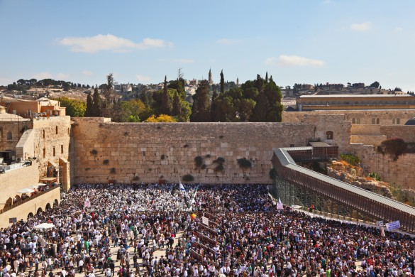

Yerushalayim of the Future
From the capital city of Eretz Yisroel, Yerushalayim of the future will be the capital of the world. Its municipal territory will be dozens of times the current size and around it will be three walls of gold, silver, and gleaming gemstones, with gates made of huge and rare precious stones. * How high will Yerushalayim be? From where will its water sources flow? What will be the new name of the future Yerushalayim? * To mark the reunification of the city on 29 Iyar.

As the public discourse has become focused on the move of the US embassy to Yerushalayim, in recognition of Yerushalayim as the capital of Eretz Yisroel, it is fascinating to read what Rabbi Yochanan says in the Midrash Shir HaShirim: “Rabbi Yochanan said, in the future, Yerushalayim will be the metropolis of all the nations, and it will draw them all to her like a river to honor her, as it says (regarding the future expansion of Yerushalayim, that it will extend to) ‘Ashdod, its subdivisions and courtyards, Aza, its subdivisions and courtyards until Lesha.’”
Along with the recognition of Yerushalayim as the capital of the world, a mass pilgrimage of all the gentiles to Yerushalayim will commence, as Rabban Shimon ben Gamliel says in Avos D’Rabbi Nosson (chapter 35): “In the future, Yerushalayim will gather within her all the nations and all the kingdoms, as it says, ‘v’nikvu eileha chol ha’goyim l’shem Hashem (and all nations shall gather to her in the name of Hashem),’ and elsewhere it says, ‘yikavu ha’mayim (let the waters gather).’ Just as kivui there refers to the gathering of all the waters of Creation into one place, so too, the kivui said here is to gather all the nations and kingdoms within it, as it says, ‘v’nikvu eileha chol ha’goyim.’”
The Jewish anticipation to be “a light onto the nations” will be realized in the future Yerushalayim as Rabbi Hoshaya says in Yalkut Shimoni (499), “In the future, Yerushalayim will be a lantern for the nations and they will walk by its light. What is the reason? [The verse that states]: ‘And nations will go by your light,’ and it also says, ‘The mountain of Hashem’s house will be firmly established at the top of the mountains… and all the nations shall stream to it. And that is what the verse says, ‘In Your light, we will see light.’”
At that point in time, we will see the fulfillment of the prophecy of Yeshaya cited before (and in the book of Micha in almost identical language), “And it shall be at the end of the days, that the mountain of Hashem’s house will be firmly established at the top of the mountains, and it shall be raised above the hills, and all the nations shall stream to it. And many peoples shall go, and they shall say, ‘Come, let us go up to the mountain of Hashem, to the house of the G-d of Jacob, and let Him teach us of His ways, and we will go in His paths,’ for ‘out of Zion shall the Torah come forth, and the word of Hashem from Yerushalayim.’”
LIGHTSOURCES AND GATES OF RARE PRECIOUS GEMS
In the future time, there will be revealed in Yerushalayim tremendous wealth, and it will be built of precious stones and gems. The Gemara (Bava Basra 75) cites a dispute, whether the “suns” (i.e., light sources) of Yerushalayim will be of shoham or yashfeh (two rare gemstones that were in the breastplate worn by the Kohen Gadol), and that Hashem ruled that there will be both.
The gates of the city will be made of gemstones and pearls that are thirty cubits by thirty cubits (over forty-five feet), and Hashem will carve into them gates that are ten cubits wide and twenty cubits high. The Gemara recounts there that when Rebbi Yochanan taught this to his students, there was one student there who scoffed, saying to himself that nowadays there does not exist such rare stones even the size of a dove’s egg, so how is it possible that there should be such huge ones? The story continues that later this student was on a journey by sea, and he saw the ministering angels carving out the aforementioned stones, and they told him that in the future time Hashem will erect them in the gates of Yerushalayim. When the student returned to Rebbi Yochanan, he exclaimed excitedly that he had witnessed exactly what Rebbi Yochanan had described. To which Rebbi Yochanan responded, “Empty one, if you had not seen you would not believe? You are one who scoffs at the words of the Sages.” At which point, “he placed his eyes upon him and he became a pile of bones.”
If you happen to appreciate variety in rare gems, you will be happy to know that the Midrash (Pesikta D’Rav Kahana, 137) lists ten types of gemstones from which “Hashem will lay the foundation of Yerushalayim.” It then goes on to offer a response to the non-believers, “If a gentile or an apostate will ask you, is such a thing possible? Tell him that it was already so in the time of Shlomo, as it is written in the verse, ‘And the king placed silver in Yerushalayim like stones.’”
HOW ABOUT TAKING A DIAMOND?
The precious stones that will litter the streets of Yerushalayim will extend beyond its borders for a distance of twelve “mil” (a little over seven miles), and from the great wealth of the city the Jewish people will become wealthy as well, as they will come to take from the gems and pearls for their personal use. As Rebbi Binyamin Levi says in the Midrash (Yalkut Shimoni Nach (478), “In the future, the borders of Yerushalayim will be filled with precious gemstones and pearls, and all Jews will come and take what they desire from them.”
During exile, many disputes develop over money matters, but during the times of Moshiach, the entire issue will be superfluous. As the Midrash Pesikta Rabbasi (1:3) says, “In this world, if a man owes money to his friend they go to the dayan. Sometimes, he makes peace between them, and sometimes, he does not make peace between them. However, in the days of Moshiach, if someone owes money to his friend, and he says let us go for a judgment before Melech HaMoshiach, once they reach the border of Yerushalayim, they will find it filled with precious gems and pearls. He (the defendant) will then take one precious stone and give it to him (the claimant) and say to him, ‘Do I owe you any more than the value of this?’ To which the other responds, ‘The king should forgive you.’ This is what is written in the verse, ‘He who makes peace within your borders.’”
CITY OF GOLD, SILVER, AND FIRE
Besides for the rare and precious stones that will be rife in Yerushalayim, it will also be surrounded by walls of gold and silver. As the Pesikta delineates, “Yerushalayim will be built out of all precious stones and gems, and it will be encircled by three walls; one of silver, one of gold, and one of glowing gemstones of all different colors. And each wall will be six cubits thick, and outside the three walls there will be walls of fire surrounding it.”
The masses of pilgrims who will visit Yerushalayim will most assuredly be astounded by the sight of these walls and what is inside them. In the words of the Midrash, here are some of the details, “One thousand four hundred and eighty-eight towers made of precious stones will surround her, and between each tower there will be one hundred and twenty gates open to her, and each gate will be one hundred and thirteen cubits and made of one precious stone. There will be two hundred and ninety-three square entrances on the streets; two thousand and three pools of water in the city; one thousand eight hundred and four gardens in every section; and one thousand freshwater wells placed in all of the corners of the city.”
Over the walls of the city, the hide of the Leviasan fish will be spread out, and its light will shine until the ends of the world. This was taught by Rebbi Yochanan in the Gemara (Bava Basra 75a), “In the future, HaKadosh Baruch Hu will make a sukka for the tzaddikim from the skin of the Leviasan… and the rest, HaKadosh Baruch Hu will spread over the walls of Yerushalayim, and its gleam will shine from one end of the world to the other, as it says, ‘And nations will go by your light, and kings by the brilliance of your shine.’”
In addition to the walls of gold, silver, diamonds, and fire, the Pesikta Rabbasi (38) adds, “HaKadosh Baruch Hu said, ‘I and my entire entourage will be a wall for Yerushalayim in the future to come, and I will command my angels to watch over her,’ as it says, ‘Upon your walls, Yerushalayim, I have appointed watchmen.’”
You might well wonder about how we are going to be able to pass through walls of fire. The Midrash addresses that particular question, “In the future to come, the Tzaddikim will walk through fire like a person who walks in the sun on a cold day and it is pleasant for him.”
HEALING SPRING
Those who travel to healing spas, as well as those who suffer from incurable conditions, will certainly be happy to hear about the new stream that will go forth from the “Holy of Holies,” with unique healing properties for all illnesses. In the words of the Midrash Raba (Shmos, 15:21), “He will send forth living waters from Yerushalayim, and with them will heal whoever has an illness, as it says, ‘And every living creature that will swarm to wherever the two streams will go, will live… and wherever the stream flows, they shall be healed and live.’”
RETURN OF THE TREASURES
Over the years, the treasuries and palaces of Yerushalayim were raided by various conquering forces. These treasures will be returned to Yerushalayim in the future. This is alluded to in a statement made by Rebbi Yochanan in the Gemara (Rosh Hashana 23a), “Each and every acacia tree that the gentiles took from Yerushalayim, HaKadosh Baruch Hu will return to her in the future, as it says, ‘I will give in the desert (midbar) the cedars, the acacia,’ and desert (midbar) refers to none other than Yerushalayim, as it says, ‘Zion has become a desert, Yerushalayim a desolation.’” The Maharsha in his commentary there explains that the acacia is used for construction and thus alludes to rebuilding and returning all that was taken away by the gentile invaders.
THE LARGEST CITY IN THE WORLD
Until a little more than a century ago, the city of Yerushalayim was limited within the boundaries of what is referred to as the Old City, which is all of slightly more than two hundred acres. Most of the neighborhoods of Yerushalayim that we are familiar with today, were built in the last century outside of the walls, and its current size is over thirty thousand acres!
However, that is still small change compared to the future size of the city, which according to the view that offers the smallest assessment, will spread to cover the entire current landmass of Eretz Yisroel
In the Pesikta Rabbasi it says in the name of Rebbi Levi, “In the future, Yerushalayim will be (in size) like the entirety of Eretz Yisroel, and Eretz Yisroel like the entire world.” Whereas in the Midrash Shir HaShirim (ch. 7), Rebbi Yochanan is quoted as saying, “In the future, Yerushalayim will extend to the gates of Damascus.”
In the Gemara (Bava Basra 75b), the Sages interpret the verse “prazos teisheiv Yerushalayim” (Yerushalayim shall be inhabited like cities without walls) to mean that it will have no border or measure at all: Said Rebbi Chanina bar Papa, HaKadosh Baruch Hu wanted to set a measurement for Yerushalayim, as it says (two verses earlier), “And I said, ‘Where are you going?’ And he said to me, ‘To measure Yerushalayim, to see how much is its width and how much is its length.’” The ministering angels then said before HaKadosh Baruch Hu, “Master of the World, you created many large cities in your world for the nations of the world, and you did not set the measure of their length and the measure of their width; Yerushalayim which has Your name in it, and your Mikdash is in it, and the righteous are in it, you are going to impose a measure on it?” Immediately, “And he said to him, ‘Run, speak to this young man, saying that Yerushalayim shall be inhabited like cities without walls, due to the multitude of men and livestock therein.’”
Rashi on the verse there explains the significance of the term prazos (cities without walls) as follows, “Just as these prazos have no set limit in the construction of their habitation but they can build as much as they want, so too with Yerushalayim.”
REACHING SKYWARD
Yerushalayim will not only expand in terms of landmass, its height will also experience significant change to the extreme. The Gemara (Bava Basra 75b) quotes Rabba as saying in the name of Rebbi Yochanan: In the future, HaKadosh Baruch Hu will raise up Yerushalayim three parsaos (each parsa equals 8000 cubits, over two miles), as it says in the verse, “It will be elevated up high and remain in its old place.” The Gemara then goes on to deduce through homiletic means that the reference to “its old place” is an indication that the city will be raised up the same distance as its original size, which was three parsa.
Rabba’s statement continues: And perhaps you might say that there is discomfort involved in going up, comes the verse to teach us, “Who are these that fly like a cloud and like doves to their cotes?”
Another view is cited in Midrash HaGadol (Shmos 27:21) in the name of Rebbi Avun: In the future, HaKadosh Baruch Hu will set Yerushalayim upon three high mountains, Snir, Tavor, and Carmel.
Once we are on the topic of clouds, we know that every Shabbos and Rosh Chodesh, the clouds will bring the Jews from the entire world to come and daven in the Holy City. In the words of the Yalkut Shimoni: It is written in the verse, “And it shall be at each new moon…,” and how is it possible that all flesh shall come to Yerushalayim every Shabbos and every (Rosh) Chodesh? To which Rebbi Levi replied: In the future, Yerushalayim will be (in size) like the entirety of Eretz Yisroel, and Eretz Yisroel like the entire world, and how will they come on Rosh Chodesh and Shabbos from the end of the world? Rather, the clouds come and carry them to Yerushalayim, and they daven there in the morning. It is regarding this that the prophet praises them, “Who are these that fly like a cloud.”
The Yalkut follows up with the question regarding a case when Rosh Chodesh falls on Shabbos, and the verse says that they will come each Rosh Chodesh and each Shabbos, so how will that work? To which it cites the response of Rebbi Pinchos HaKohen the son of Rebbi Chama, in the name of Rebbi Reuven: They will come twice, once for Shabbos and once for Rosh Chodesh, and the clouds will carry them at rising time and bring them to Yerushalayim. And they daven there in the morning, and then the clouds bring them home. “Who are these that fly like a cloud,” refers to the morning prayer, “And like doves to their cotes,” refers to the afternoon prayer.
There will be an additional phenomenon that will take place in Yerushalayim on each Shabbos and Rosh Chodesh. In the words of the Yalkut Shimoni (Yechezkel 383): The gates of Yerushalayim that sunk into the ground (when the Babylonians laid siege to the city) will rise up in the future and be renewed, each one in its place. And on the day of Shabbos, they will open themselves, and all of the people will know that the Shabbos day has arrived. Also, on Rosh Chodesh the Jews will be standing and watching the doors open themselves, and will know that at that exact time the new moon has risen, and they are sanctifying the new moon in the Upper Realms.
NEW NAME FOR THE CITY
To conclude with a sensational fact that you might not have been aware of, the name of the city will actually change and it will be called, Kisei Hashem (Throne of Hashem). In the words of the Midrash Raba (VaYeira 49) citing Rebbi Pinchos in the name of Rebbi Shmuel: HaKadosh Baruch Hu will even call Yerushalayim by a new name in the future, as it says in the verse, “At that time, they will call Yerushalayim ‘Throne of Hashem.’”
Avrohom Rainitz. "Yerushalayim of the Future." Beis Moshiach, no. 1117 (May 8, 2018).